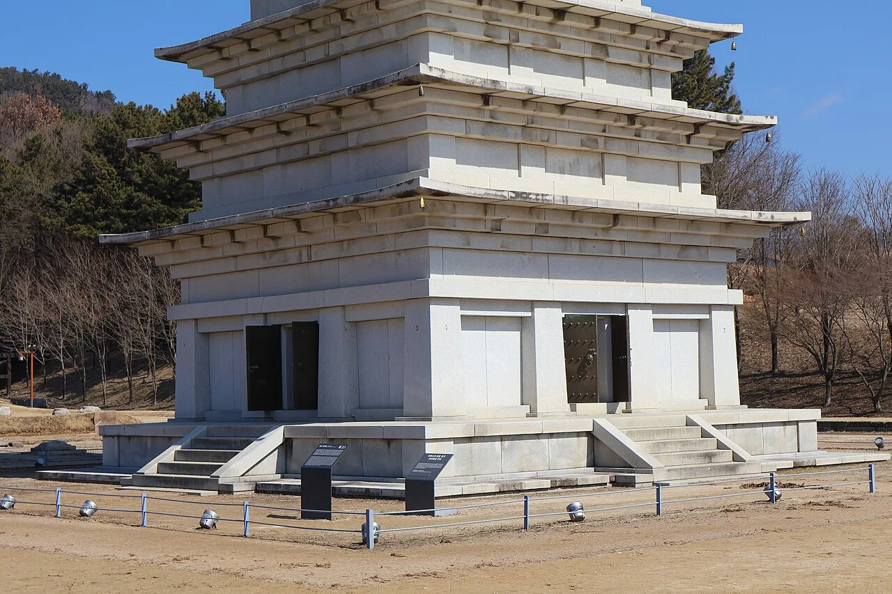
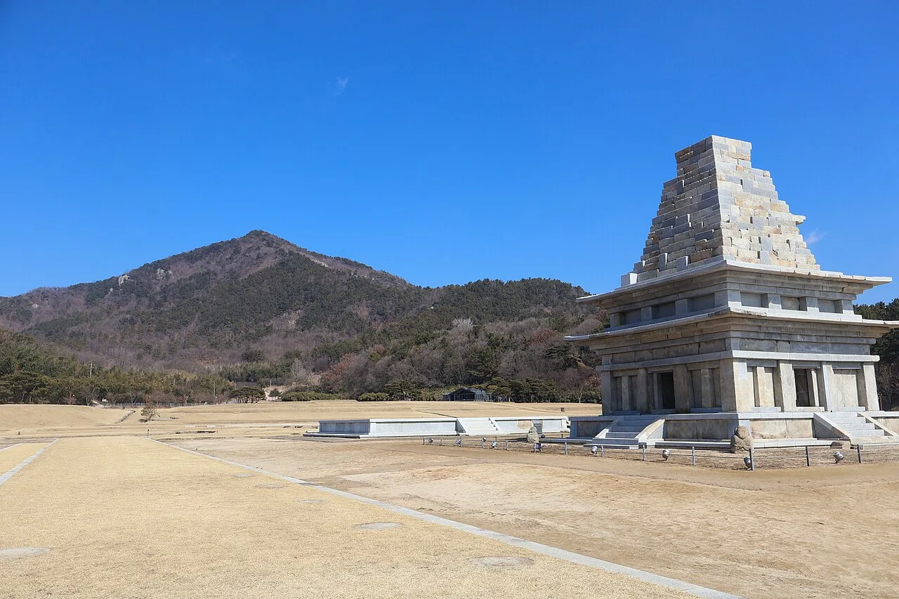
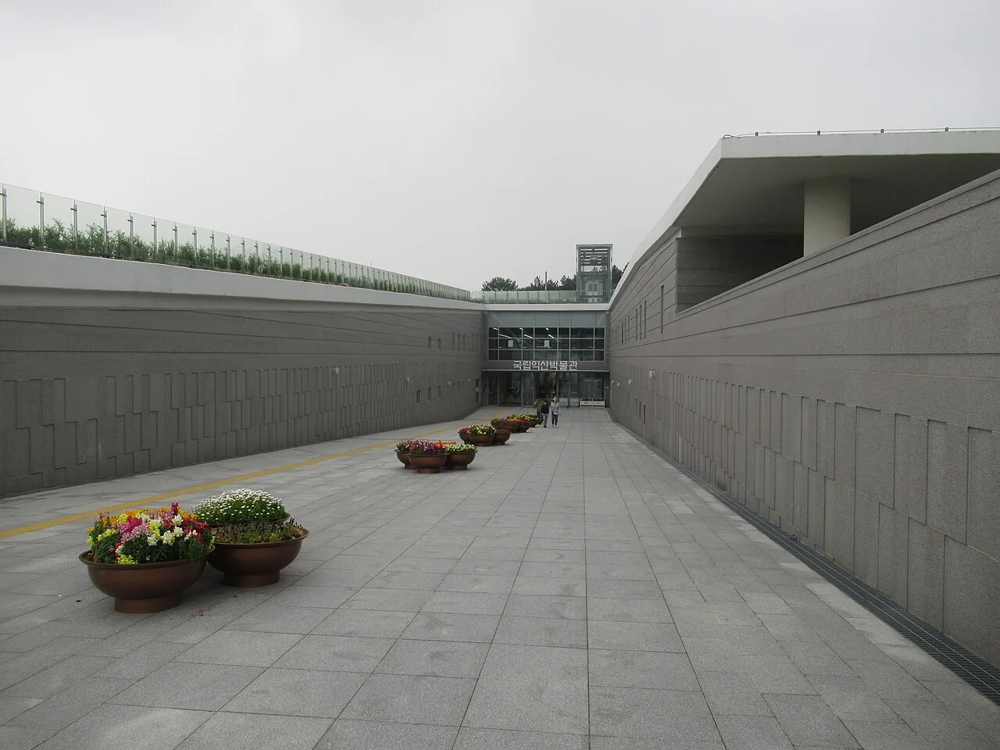

▲ 밤하늘 아래 조명을 받은 미륵사지 서탑(오른쪽)과 멀리 보이는 동탑. 미디어아트 기간에는 이 일대가 빛으로 채워진다 ⓒ Wikimedia Commons
국가유산청이 전국 12개 지역에서 여는 '2026 국가유산 미디어아트' 중 익산 편이 9월 4일 미륵사지에서 개막했다. 유네스코 세계유산이자 국보 제11호인 미륵사지 석탑을 무대로, 역사 속으로 사라진 거대한 목탑을 정교한 정보통신기술(ICT)로 밤하늘에 재현하는 것이 이번 행사의 핵심이다. 목탑지와 동·서 석탑, 당간지주까지 조명·레이저·음악으로 연결해 미륵사지의 옛 위용을 입체적으로 감상할 수 있게 했다.
1. 사라진 목탑을 되살리는 법 — '재탄생: 목탑의 귀환'

▲ 미륵사지 동원 구층석탑을 가까이서 본 모습. 이번 미디어아트는 이 자리에 있던 목탑을 빛으로 되살리는 데 초점을 맞췄다 ⓒ Wikimedia Commons (CC BY-SA 4.0)
미륵사지에는 원래 목탑과 동·서 두 개의 석탑이 나란히 서 있었던 것으로 알려져 있다. 이 중 목탑은 오래전 사라져 터만 남았는데, 이번 미디어아트의 대표 프로그램인 '재탄생(Reborn): 목탑의 귀환'은 이 목탑지 위에 높이 30m 규모의 미디어파사드로 목탑의 모습을 재현한다. 개막식에서는 익산시립무용단의 융복합 축하 공연과 함께 이 비주얼 라이트쇼가 처음 공개됐다.
2. 언제 가야 하나 — 운영기간과 시간표
| 구분 | 내용 |
|---|---|
| 운영기간 | 2026년 9월 4일(금)~9월 27일(일), 총 24일간 |
| 운영시간 | 19:30~21:30 |
| 정시 프로그램 | 1일 4회 순환 운영 (19:30~21:25 사이) |
| 주말 별도 운영 | 토·일 17:00~21:00 / 금·토·일 운영 콘텐츠 별도 |
| 상설 프로그램 | 연중 운영, 인터랙티브 참여형 콘텐츠 포함 |
3. 23개 콘텐츠, 세 시대로 나뉜 빛

▲ 낮에 본 미륵사지 서탑(국보 제11호)과 뒤편 미륵산 자락. 밤에는 이 일대 전체가 미디어아트 무대로 바뀐다 ⓒ Wikimedia Commons (CC BY-SA 4.0)
공식 홈페이지에 따르면 전체 콘텐츠는 23개로, 세 개의 시간 테마로 나뉜다. 목탑지·동서탑·당간지주 일대에서 펼쳐지는 대형 미디어파사드 '성시(聖時)-수호의 빛', 입구 통로의 몰입형 라이트 터널 등 7개 프로그램으로 구성된 '현시(現時)-왕도의 빛', 그리고 관람객이 직접 참여하는 인터랙티브 콘텐츠 5개로 이뤄진 '여시(餘時)-미래의 빛'이다. 미디어파사드, 인터랙티브 빛조형물, 포토부스, DIY 체험까지 다양한 형태로 구성돼 있어 단순 관람을 넘어 체험형 콘텐츠 비중이 높은 편이다.
4. 요금과 주차, 확인되지 않은 부분
공식 홈페이지의 행사 소개·프로그램 안내 페이지 어디에도 관람료 정보는 명시돼 있지 않다. 같은 국가유산청 시리즈인 부여 정림사지 미디어아트는 "관람료도 예약도 필요 없다"는 문구로 무료 운영이 확인됐지만, 익산 미륵사지 편이 동일한 정책을 따르는지는 이 글을 쓰는 시점까지 공식적으로 확인되지 않았다. 주차 역시 공식 안내가 없는 상태다. 다만 미륵사지 바로 옆에 있는 국립익산박물관은 무료주차장(약 100대 규모)을 갖추고 있고 관람시간도 09:00~18:00로 무료 운영되므로, 낮 시간 박물관 주차장을 이용한 뒤 도보로 이동하는 방법도 고려할 만하다.
공식 홈페이지에서 확인 가능5. 낮에는 국보 석탑, 밤에는 미디어아트

▲ 국립익산박물관 새 건물 입구. 관람은 무료이며 미륵사지와 바로 붙어 있어 낮 시간 함께 둘러보기 좋다 ⓒ Wikimedia Commons (CC BY-SA 4.0)
미륵사지 서탑은 오랜 해체·보수를 거쳐 2019년 복원이 완료된 국보 제11호로, 현존하는 우리나라 석탑 중 가장 오래되고 규모가 큰 것으로 꼽힌다. 야간 미디어아트만 보고 돌아가기보다는, 국립익산박물관에서 미륵사지 출토 유물과 동원 구층석탑까지 낮 시간에 먼저 둘러본 뒤 해가 지고 나서 같은 자리에서 열리는 미디어아트를 이어 보는 동선을 짜면 하루를 알차게 쓸 수 있다.
6. 정리
체크포인트
- 2026 익산 미륵사지 미디어아트는 9월 4일~27일, 매일 19:30~21:30 운영된다.
- 대표 콘텐츠는 목탑을 30m 빛기둥으로 재현한 '재탄생: 목탑의 귀환'이다.
- 관람료·주차 안내는 아직 공식적으로 확인되지 않았다 — 방문 전 재확인이 필요하다.
- 국립익산박물관은 무료 관람·무료 주차(약 100대)로, 낮 시간 연계 코스로 활용할 만하다.
- 토·일에는 17:00~21:00 별도 프로그램이 추가로 운영된다.